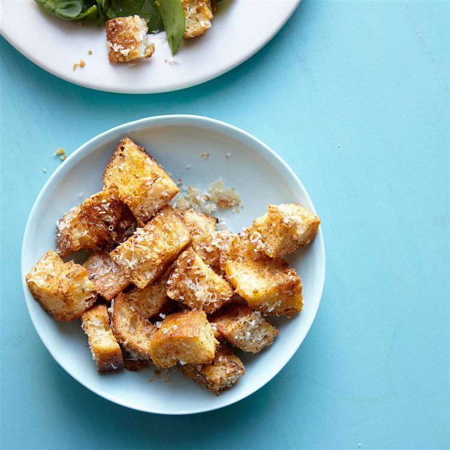

Home
Croutons

Description
These homemade garlic-Parmesan croutons are the perfect crunchy topping for salads and soups,
and they're ridiculously easy to make. Don't let stale baguettes go to waste!
Ingredients
- ½ cup olive oil
- 4 cloves garlic, finely minced
- 1 (8 ounce) loaf French bread baguette, cut into 1/2-inch cubes
- ¾ cup finely grated Parmigiano-Reggiano cheese, divided
- ½ teaspoon Italian seasoning
- ½ teaspoon paprika
- ½ teaspoon freshly ground black pepper
- ½ teaspoon salt
- 1 pinch cayenne pepper
Steps
-
Preheat the oven to 300 degrees F (150 degrees C). Line a baking sheet with a silicone baking mat.
-
Stir together olive oil and garlic in a small bowl until combined. Let sit at room temperature until
flavors are infused, about 3 hours.
-
Place bread cubes in a large bowl. Pour garlic oil through a strainer onto bread; toss until bread is
evenly coated with oil. Add 1/2 cup Parmigiano-Reggiano cheese, Italian seasoning, paprika, black pepper,
salt, and cayenne pepper; toss to coat. Spread bread cubes out in a single layer on the prepared baking sheet.
-
Bake in the preheated oven for 15 minutes. Turn croutons and bake for 15 minutes more. Push croutons together
with a spatula to form a compact rectangle on the baking sheet. Sprinkle remaining 1/4 cup Parmigiano-Reggiano
cheese over the top. Continue baking until cheese is melted and croutons are crunchy, 10 to 15 minutes more.